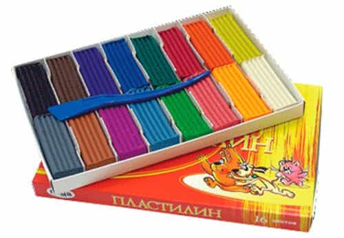

< < < Back
How To Buy Toys For Your Child – Return Of Kings
The Christmas season is upon us. It is a time of good cheer, good will and giving. A time of spreading presents among all and sundry. A season in which a man’s fondest hope is simply to get through it all without screwing up too badly.
Selecting presents for children is especially difficult. Although the present is ostensibly for the kid, the adequacy of the present will be judged by your wife, the kid’s parents, and the kid’s friends. The question is not how much pleasure is derived, but how well you satisfy social expectations all around.
The child’s parents want something that won’t make a total mess, will fit someplace where it needs to be stored, and won’t make too much noise and won’t hurt the kid. The kid’s objective is just to have fun and stay amused.
The other interested parties are the toy store and the toy manufacturers. Their job is not to make it easy, but to maximize their profits. They are well aware that many people who buy toys for kids don’t have a clue what they are doing. You are easy prey. “Please, just let me know how much money I have to fork over and let’s get this done with.”
In case you are lucky enough to have the freedom to choose toys based on their utility, instead of these nonsensical social factors, here are some things to keep in mind when you’re shopping.
Toys with cords and batteries

A one-trick pony – good for a day or two
Battery-powered toys will display the most splash and pizzazz on Christmas day. The remote-controlled race car that chases all over the living room with flashing lights and loud noises will certainly attract attention. But it is pretty much a one trick pony. That’s all it does. The kid will figure out the extent of its attraction in about 20 minutes. After that its most interesting feature is that its noise, light and bumping annoy the adults. The adults will be quite glad when the batteries die or the toy breaks, which usually happens fairly soon.
You can consider the made-in-China battery-powered toy if you want to make a safe choice when you are buying for somebody else’s kids. If it is for your own house, there are better alternatives.
Opinions vary on video games. James Paul Gee contends they can be educational. Mark Bauerlein thinks otherwise. My kid won’t have any.
Musical toys
Doesn’t do Mozart, but can handle “Twinkle Twinkle” and “Frère Jacques.”
Children used to pick up a musical education from their environment. Families would sing Christmas carols together. Kindergarten classes would sing about Rudolph the Red Nosed Reindeer. Society has changed, however. Parents listen to recorded music instead of singing—and it is often not the kind that you can sing along to. School classes are so diverse, and religion is in such a bad odor, that they can’t sing about Santa Claus, much less the birth of Christ. Therefore, a musical instrument may be something quite new to a modern child.
A kid can do a lot with a toy xylophone. It is surprising the number of nursery rhymes and simple songs that are written in the key of C. Any toy xylophone can handle songs like Frère Jacques and Twinkle Twinkle Little Star, and the child will learn quite a bit about music as he teaches himself how to pluck out the melody.
A recorder, a concertina or a small accordion can also handle a melody. These are little bit harder for a kid to manage. He needs some manual dexterity, and he can’t watch as closely where his fingers are going as when he is hammering keys on a xylophone. Still and all, kids of eight or nine years or so may find them fascinating.
Drums, tambourines and rattles are not melodic. They just make noise. Percussion instruments are useful accompaniment if you are going to sing with the children, but they don’t keep the kid amused when he is playing by himself—except as a means of bothering his parents.
Make him think
Kids like jigsaw puzzles. Also, a kid thrives on adult attention. Puzzles are fun to do with children. Buy a puzzle that is a year or two above his age, and do it together. For a four-year-old, buy the 120 piece puzzle labeled “six and up” instead of the 30 piece cartoon puzzle. Let him, of course, put the last few pieces in. Soon he will be able to do the whole thing. A four-year-old will know his numbers even if he can’t read. He will be proud that he is doing something meant for bigger kids.
There are boy puzzles and girl puzzles. Princesses and unicorns on one hand, and cars, tanks and fighter planes and soldiers on the other. Recognize who you are buying the toy for.
It is a pleasure to watch kids figure out the strategy for doing jigsaw puzzles. One strategy is to do the border first—border pieces are easy to identify. Another is to sort the pieces out by objects: Princess here, unicorn here, castle here, sky here and bushes over there. A puzzle for six-year-olds is usually fairly colorful and easy, but the colors are more subtle in puzzles for older kids.
Constructors make great toys. Tinker toys and erector sets kept me occupied for hours when I was a kid. This is an area in which the toy manufacturers have gone crazy. Lego used to leave the design up to the child’s imagination, but it has gone upscale. Now there are expensive Lego sets that are so fancy the child can only make one thing out of it—the car or robot shown on the box. Go with blocks, old-fashioned Legos, and other connecting pieces that allow the child’s imagination to go where it will.
Artistic toys

Any place his imagination will take him – and cheap besides
Every parent’s joy is a child who can amuse himself. There is nothing more satisfying than watching your son spend half an hour painting a Christmas tree or a picture of a cat. It is well worth the couple of minutes praise that you give him afterwards. Artist’s supplies are inexpensive. Every child should have colored pencils, crayons, watercolors and pastels, and an abundant supply of paper—preferably the A3 or 11 x 17 sizes mentioned below.
Children also like to sculpture. The “simpler the better” rule applies here as well. Give them staples like modeling clay or plastilene. On the Internet you can find recipes for making it from salt, flour and water.
No imagination required – all the thinking has been done for the kid. It’s in the price.
Books
It commits mom and dad to reading to him – but well worth the effort
Books are especially important in this age of video entertainment. Starting about the age of three, every child should have ABC books and counting books. It will be a couple of years until they learn how to read, but familiarity should start early and they love to have parents read to them.
My five year old son’s favorite books tell him about the world. He has one titled “The Children’s Encyclopedia,” which covers topics from the ancient Greeks through volcanoes and chameleons, another book on technology, and one on dinosaurs. He still insists that I read to him, but I can’t trick him. If I’m reading about a wildebeest and I call it a rhinoceros he will stop me—“Rhinoceros starts with ‘R,'” he insists. He is paying attention.
Older children can amuse themselves for hours with books, but for younger kids the gift of a book represents work for the parents. It is worthwhile work, but do not overlook that it is work.
Make it move
A $25 Craigslist bike. After one spill, who can tell it wasn’t new?
Kids in general, and boys in particular love rolling and moving toys—bikes, scooters, sleds, skis and snowboards. They do not have to be new. They do not have to be top-of-the-line. Just as a Fiat and a Mercedes will get you to the grocery store equally well, anything mobile serve their purpose.
Buy something used on Craigslist if you can get away with it. Human irrationality is in your favor. Adults will buy weights or an exercise bike with the best of intentions, and then notice two years later that it is just taking up space and sell it for a fraction of the original cost. Same with kids’ toys. Sleds and bicycles are almost always outgrown before they are worn out. Shopping used, you can buy something that will give the kid years of pleasure and still remain within your budget.
Repurposing grown-up materials as toys
Kids have a sixth sense that enables them to distinguish between adult things and children’s things. Of course they prefer adult things. Three of my son’s favorite toys are an old Omega camera, one that hasn’t worked for 10 years, a dead cell phone and a defunct HP inkjet printer. They have the look and the feel of adult things even though they don’t work.
Every parent will discover that among the adult things the kids like are paper, scissors, pencils and pens, scotch tape and staplers. If you go to a stationary store you can easily supplement these with drawing aids: a French curve, a triangle, a ruler, a compass. All of these things are inexpensive, and useful around the house.
And the kid will spend more time playing with it than a single purpose toy such as a remote-controlled car. That remote-controlled car only does one thing and only does it until the antenna breaks off or the battery runs out. A ream of paper lasts forever. By all means buy some big paper as well—11×17 in the US, A3 in Europe. Nothing flies better than a monster paper airplane. Buy them in colors to make it more interesting.
Repurposing trash as toys
Is this box trash? A toy? A house? Only the cat knows for sure.
Kids also have a genius for inventing their own toys. Boxes are wonderful. You can go to a liquor store and pick up an assortment of 20 boxes. Set them down with the kid, along with some industrial-strength scotch tape, a stapler, and may be a box cutter, and you can have no end of fun creating your own city. Large ones like those for stoves and refrigerators are big enough the kid can even crawl inside. It is loads of fun and it costs next to nothing. Toys like this enjoy the novelty factor. If he gets bored with it after a week, so what? It cost nothing to begin with.
During my misspent youth in California we used to go tobogganing down the dry hillsides on big boxes. Steep hillsides of dry grass are very slippery. It is a good idea for you, the adult, to check it out for hidden rocks, but then let the kids go at it.
Conclusion
The toy store, the parents, the giver and the kid all have different perspectives on toys. The most successful gift is one that will hold the child’s interest over the long term, will teach him something, and will not drive his parents to distraction. Most of the best toys are not terribly expensive, and you can usually find secondhand bargains on those that are.
Read More: The Price I Paid for Helping a Single Mom’s Child